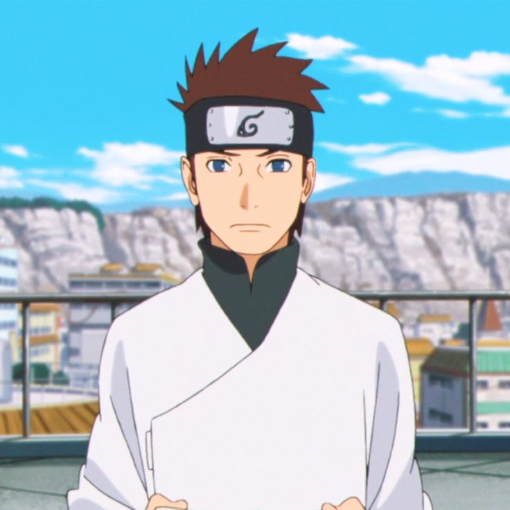
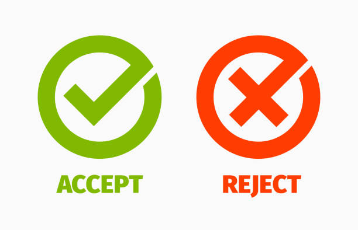
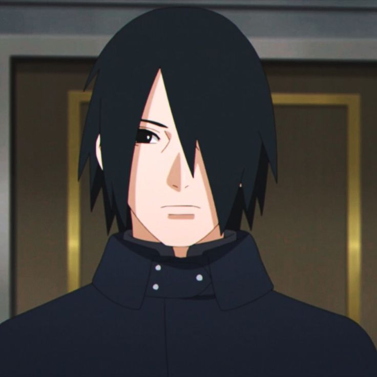
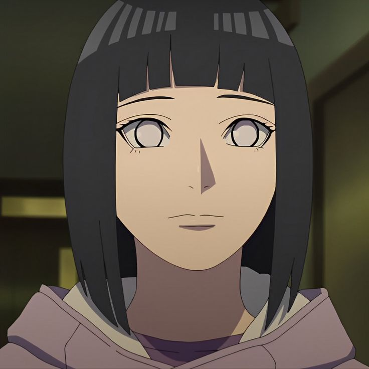
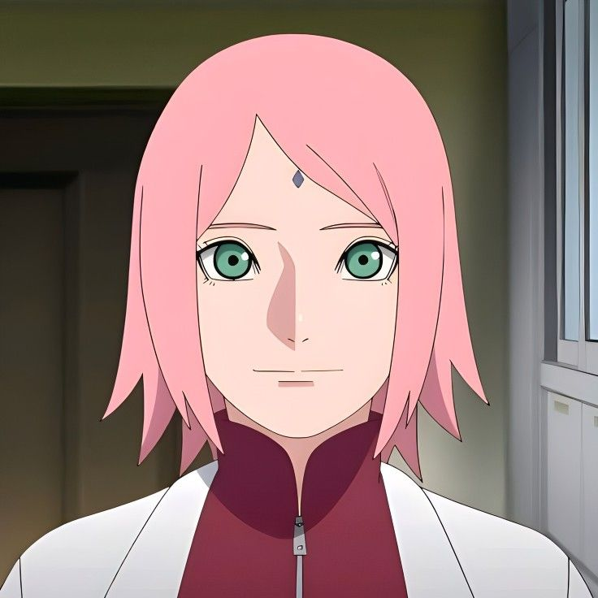

Naruto Uzumaki
Konoha, País del Fuego Séptimo Hokage | Líder de la Aldea Oculta de la Hoja | Amante del ramen y la amistadApasionado por proteger a su aldea y cumplir su sueño de ser un líder reconocido y respetado. Con un espíritu inquebrantable y una fuerza que trasciende límites, Naruto trabaja incansablemente por la paz y la unidad entre naciones shinobi.
Solicitudes de conexión (2)



Tus conexiones (+500)

Hinata Hyuga
Iruka Umino
Kakashi Hatake

Shikamaru Nara
